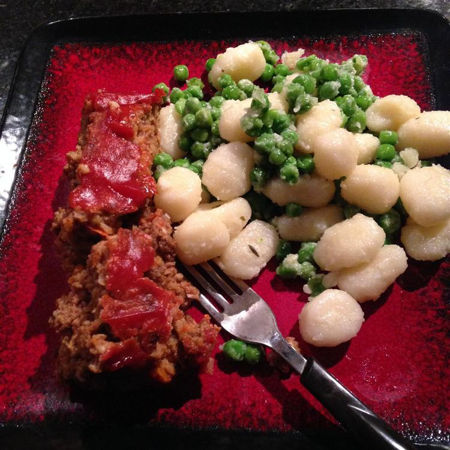

Home
Vegetarian Meatloaf

Description
For those vegetarians who miss the taste of meatloaf, here is a tasty vegetarian version that matches the flavor.
Ingredients
- 1 (12 ounce) bottle BBQ sauce, or to taste
- 1 (12 ounce) package vegetarian burger crumbles
- 1 green bell pepper, chopped
- ⅓ cup minced onion
- 1 clove garlic, minced
- ½ cup soft bread crumbs
- 3 tablespoons vegetarian Parmesan cheese
- 1 large egg, beaten
- ¼ teaspoon dried thyme
- ¼ teaspoon dried basil
- ¼ teaspoon parsley flakes
- Salt and pepper to taste
- Preheat the oven to 325 degrees F (165 degrees C). Lightly grease a 9x5-inch loaf pan.
- Combine 1/2 of the BBQ sauce, vegetarian burger crumbles, green bell pepper, onion, garlic, bread crumbs, Parmesan cheese, and beaten egg in a large bowl.
- Season with thyme, basil, parsley, salt, and pepper.
- Transfer mixture into the prepared loaf pan.
- Bake in the preheated oven for 45 minutes.
- Pour remaining BBQ sauce over the loaf, and continue baking until loaf is set, about 15 minutes more.